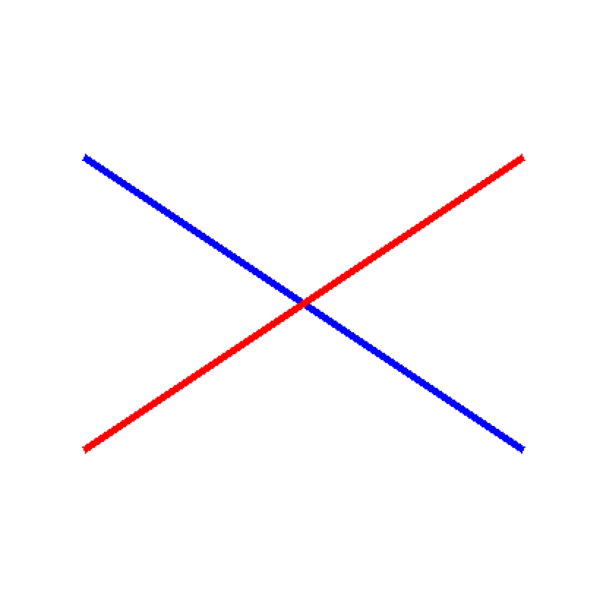
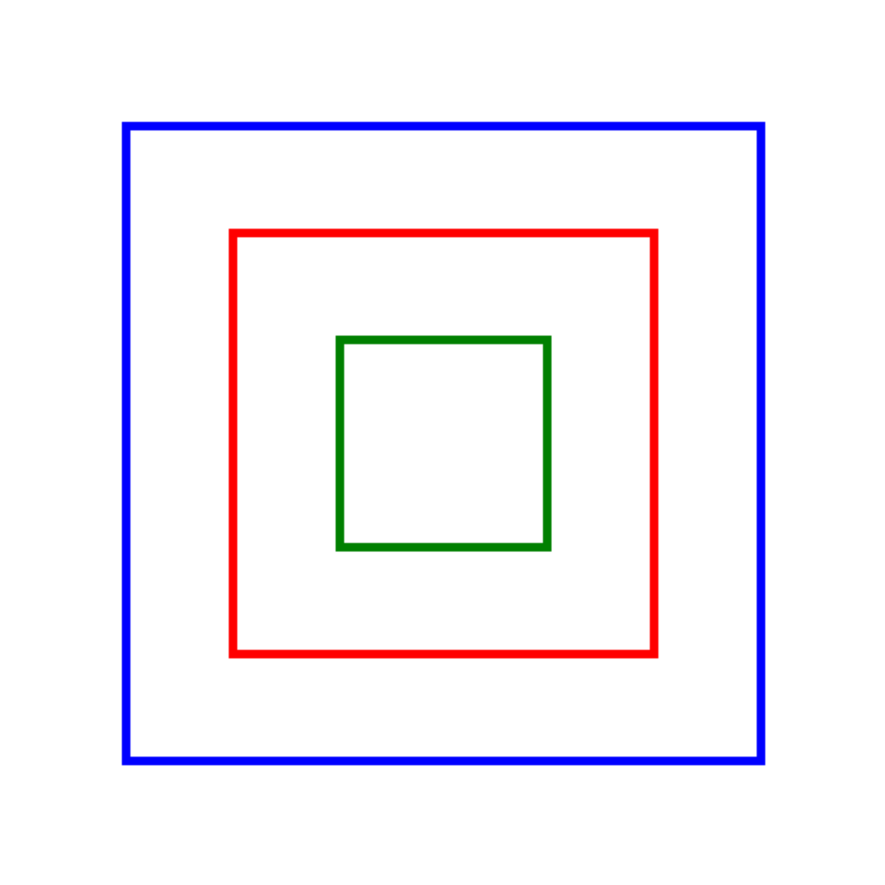
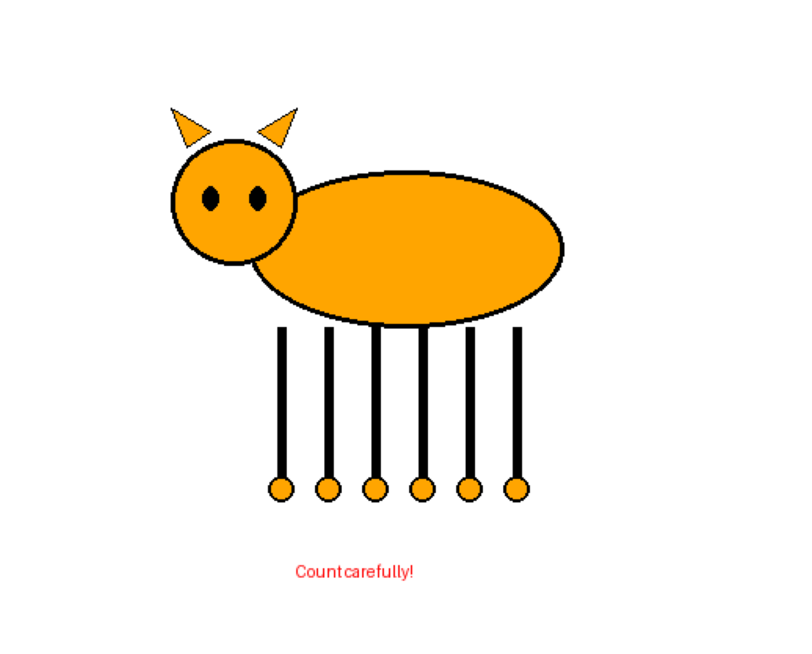
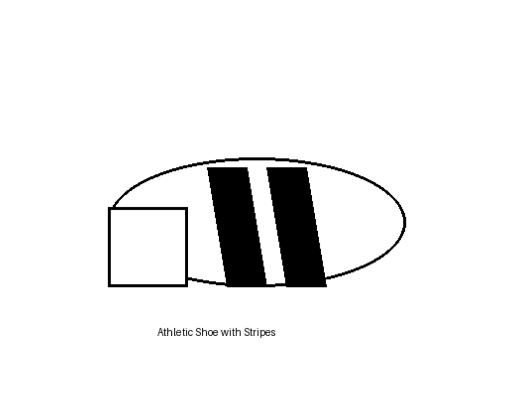
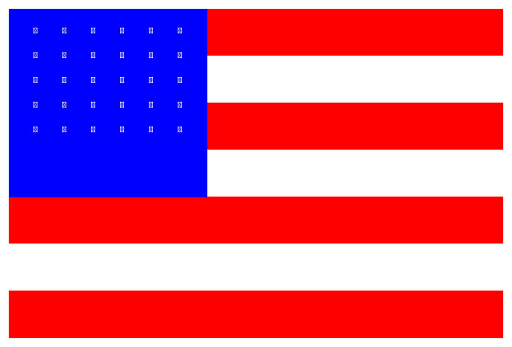
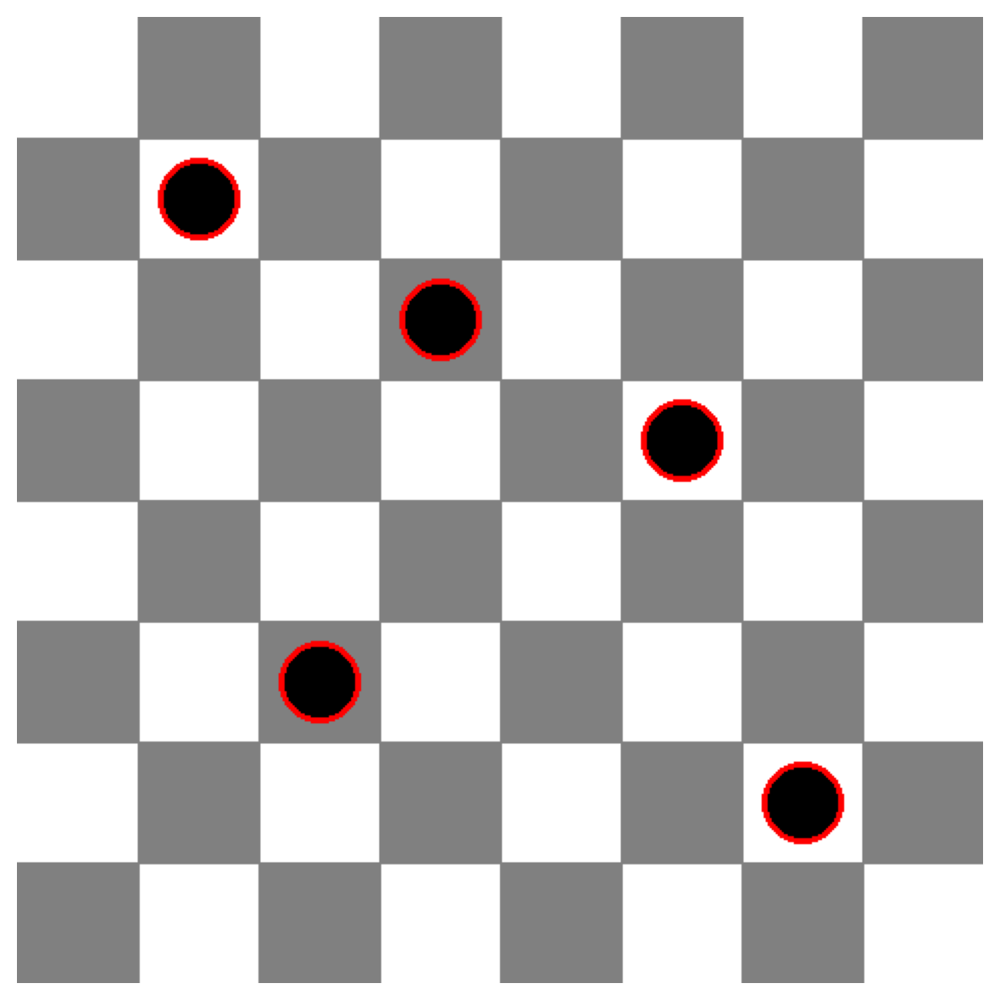

# Install required packages
# !pip install -q google-genai pillow matplotlib numpy datasetsIntroduction
In a previous post, we explored Google’s Gemini 3 Pro multimodal capabilities. The model showed impressive performance on object detection, segmentation, and complex visual reasoning tasks.
But how does it perform on low-level visual perception tasks? Two recent research projects shed light on limitations of vision language models:
- VLMsAreBlind: Tests 7 low-level geometric tasks (counting line intersections, nested shapes, etc.) where top models achieved only ~58% accuracy
- VLMsAreBiased: Tests whether models rely on memorized knowledge rather than visual evidence when familiar objects are modified (e.g., counting legs on 6-legged cats)
In this notebook, we’ll test Gemini 3 Pro on both real benchmark data from Hugging Face and custom-generated test images to see if Google’s latest model has improved on these challenging visual tasks.
What We’ll Test
Real Benchmark Data: - 3 examples from VLMsAreBlind (geometric reasoning) - 3 examples from VLMsAreBiased (memorization vs. vision)
Custom Tests - VLMsAreBlind (Low-Level Vision): 1. Line intersections 2. Touching/overlapping circles 3. Grid row/column counting 4. Nested squares
Custom Tests - VLMsAreBiased (Memorization vs. Vision): 1. Modified animal legs (do models see 6 legs or default to “cats have 4 legs”?) 2. Modified brand logos (Adidas with 2 stripes instead of 3) 3. Modified national flags (USA flag with 7 stripes instead of 13) 4. Modified chess positions
Let’s find out if Gemini 3 Pro can truly “see” or if it’s still relying on learned patterns!
Setup
import os
import json
from google import genai
from PIL import Image, ImageDraw, ImageFont
import matplotlib.pyplot as plt
import numpy as np
from io import BytesIO
# Initialize client
if 'GEMINI_API_KEY' not in os.environ:
raise ValueError(
"GEMINI_API_KEY not found in environment.\n"
"Set it with: export GEMINI_API_KEY='your-key'\n"
"Get your key at: https://aistudio.google.com/apikey"
)
client = genai.Client(api_key=os.environ['GEMINI_API_KEY'])
MODEL = "models/gemini-3-pro-preview"
print(f"Gemini client initialized")
print(f"Using model: {MODEL}")
%config InlineBackend.figure_format = 'retina'Gemini client initialized
Using model: models/gemini-3-pro-previewHelper Functions
def test_visual_task(image, question, correct_answer, task_name):
"""Test a single visual reasoning task."""
print(f"\n{'='*80}")
print(f"Task: {task_name}")
print(f"{'='*80}")
# Display image
plt.figure(figsize=(6, 6))
plt.imshow(image)
#plt.title(task_name, fontsize=14, fontweight='bold')
plt.axis('off')
plt.tight_layout()
plt.show()
# Ask Gemini
print(f"\nQuestion: {question}")
print(f"Correct Answer: {correct_answer}")
response = client.models.generate_content(
model=MODEL,
contents=[question + "\n\nAnswer with ONLY the number or short answer, no explanation.", image]
)
# Handle None response
if response.text is None:
print(f"Gemini's Answer: [No response]")
print(f"\nResult: INCORRECT (No response)")
print("="*80)
return False, "[No response]"
model_answer = response.text.strip()
print(f"Gemini's Answer: {model_answer}")
# Check correctness (case-insensitive comparison)
correct_str = str(correct_answer).lower()
answer_str = str(model_answer).lower()
is_correct = correct_str in answer_str or answer_str in correct_str
result = "CORRECT" if is_correct else "INCORRECT"
print(f"\nResult: {result}")
print("="*80)
return is_correct, model_answer
def create_results_summary(results):
"""Create a summary table of all results."""
print(f"\n\n{'='*80}")
print("FINAL RESULTS SUMMARY")
print(f"{'='*80}\n")
total_correct = sum(1 for r in results if r['correct'])
total_tasks = len(results)
accuracy = 100 * total_correct / total_tasks if total_tasks > 0 else 0
print(f"Overall Accuracy: {total_correct}/{total_tasks} ({accuracy:.1f}%)\n")
# Group by category
categories = {}
for r in results:
cat = r['category']
if cat not in categories:
categories[cat] = {'correct': 0, 'total': 0}
categories[cat]['total'] += 1
if r['correct']:
categories[cat]['correct'] += 1
print("By Category:")
for cat, stats in categories.items():
cat_accuracy = 100 * stats['correct'] / stats['total']
print(f" {cat}: {stats['correct']}/{stats['total']} ({cat_accuracy:.1f}%)")
print(f"\n{'='*80}")
print("Helper functions loaded")Helper functions loadedLoad Real Benchmark Data
Let’s load a small subset of actual test images from both benchmarks hosted on Hugging Face.
from datasets import load_dataset
# Load VLMsAreBlind dataset (line intersections, grids, nested shapes)
print("Loading VLMsAreBlind dataset...")
try:
vlms_blind = load_dataset("XAI/vlmsareblind", split="valid")
print(f"✓ Loaded {len(vlms_blind)} examples")
# Sample a few examples from different tasks
tasks_available = set(vlms_blind['task'])
print(f" Tasks available: {', '.join(sorted(tasks_available))}")
except Exception as e:
print(f"Note: Could not load VLMsAreBlind dataset - {str(e)[:100]}")
vlms_blind = None
# Load VLMsAreBiased dataset (modified animals, logos, flags)
print("\nLoading VLMsAreBiased dataset...")
try:
vlms_biased = load_dataset("anvo25/vlms-are-biased", split="main")
print(f"✓ Loaded {len(vlms_biased)} examples")
# Sample topics
topics_available = set(vlms_biased['topic'])
print(f" Topics available: {', '.join(sorted(topics_available))}")
except Exception as e:
print(f"Note: Could not load VLMsAreBiased dataset - {str(e)[:100]}")
vlms_biased = NoneTest Real Examples from VLMsAreBlind
Let’s test 2-3 real examples from the VLMsAreBlind benchmark.
results_real = []
if vlms_blind is not None:
# Test 3 examples from different tasks
test_indices = [0, 100, 500] # Sample from different parts of dataset
for idx in test_indices:
example = vlms_blind[idx]
# Extract data
image = example['image']
prompt = example['prompt']
ground_truth = example['groundtruth']
task_name = example['task']
# Test with Gemini
correct, answer = test_visual_task(
image,
prompt,
ground_truth,
f"VLMsAreBlind: {task_name} (Example {idx})"
)
results_real.append({
'category': 'VLMsAreBlind (Real)',
'task': task_name,
'correct': correct,
'expected': ground_truth,
'actual': answer
})
else:
print("VLMsAreBlind dataset not loaded - skipping tests")Test Real Examples from VLMsAreBiased
Now let’s test 2-3 real examples from the VLMsAreBiased benchmark.
if vlms_biased is not None:
# Test 3 examples from different topics
test_indices = [0, 50, 100] # Sample from different parts of dataset
for idx in test_indices:
example = vlms_biased[idx]
# Extract data
image = example['image']
prompt = example['prompt']
ground_truth = example['ground_truth']
topic = example['topic']
sub_topic = example['sub_topic']
# Test with Gemini
correct, answer = test_visual_task(
image,
prompt,
ground_truth,
f"VLMsAreBiased: {topic} - {sub_topic} (Example {idx})"
)
results_real.append({
'category': 'VLMsAreBiased (Real)',
'task': f"{topic}: {sub_topic}",
'correct': correct,
'expected': ground_truth,
'actual': answer
})
else:
print("VLMsAreBiased dataset not loaded - skipping tests")Part 1 (continued): Custom Tests - Low-Level Vision
Now let’s test with our own custom-generated images to complement the real benchmark data.
Part 1: VLMsAreBlind - Low-Level Vision Tests
These tests evaluate whether Gemini 3 Pro can accurately perceive geometric details at a low level.
Test 1: Line Intersections
Can the model count where two line segments intersect?
results = []
# Create test image: Two lines that intersect once
img = Image.new('RGB', (400, 400), 'white')
draw = ImageDraw.Draw(img)
# Draw two intersecting lines
draw.line([(50, 100), (350, 300)], fill='blue', width=5)
draw.line([(50, 300), (350, 100)], fill='red', width=5)
correct, answer = test_visual_task(
img,
"How many times do the blue and red lines intersect?",
"1",
"Line Intersections (1 intersection)"
)
results.append({
'category': 'VLMsAreBlind',
'task': 'Line Intersections',
'correct': correct,
'expected': '1',
'actual': answer
})
================================================================================
Task: Line Intersections (1 intersection)
================================================================================
Question: How many times do the blue and red lines intersect?
Correct Answer: 1
Gemini's Answer: 1
Result: CORRECT
================================================================================# Test 2: Lines that don't intersect
img2 = Image.new('RGB', (400, 400), 'white')
draw2 = ImageDraw.Draw(img2)
# Draw two parallel lines
draw2.line([(50, 100), (350, 100)], fill='blue', width=5)
draw2.line([(50, 200), (350, 200)], fill='red', width=5)
correct, answer = test_visual_task(
img2,
"How many times do the blue and red lines intersect?",
"0",
"Line Intersections (0 intersections - parallel)"
)
results.append({
'category': 'VLMsAreBlind',
'task': 'Line Intersections',
'correct': correct,
'expected': '0',
'actual': answer
})
================================================================================
Task: Line Intersections (0 intersections - parallel)
================================================================================
Question: How many times do the blue and red lines intersect?
Correct Answer: 0
Gemini's Answer: 0
Result: CORRECT
================================================================================Test 2: Touching Circles
Can the model distinguish between overlapping, touching, and separated circles?
# Test: Two overlapping circles
img = Image.new('RGB', (400, 400), 'white')
draw = ImageDraw.Draw(img)
# Draw two overlapping circles
draw.ellipse([50, 150, 200, 300], outline='blue', fill=None, width=5)
draw.ellipse([150, 150, 300, 300], outline='red', fill=None, width=5)
correct, answer = test_visual_task(
img,
"Are these two circles overlapping, touching, or separated? Answer with ONE word only.",
"overlapping",
"Circle Relationship (overlapping)"
)
results.append({
'category': 'VLMsAreBlind',
'task': 'Touching Circles',
'correct': correct,
'expected': 'overlapping',
'actual': answer
})
================================================================================
Task: Circle Relationship (overlapping)
================================================================================
Question: Are these two circles overlapping, touching, or separated? Answer with ONE word only.
Correct Answer: overlapping
Gemini's Answer: Overlapping
Result: CORRECT
================================================================================Test 3: Grid Counting
Can the model accurately count rows and columns in a grid?
# Create a 5x7 grid
img = Image.new('RGB', (500, 400), 'white')
draw = ImageDraw.Draw(img)
rows = 5
cols = 7
cell_width = 60
cell_height = 60
start_x = 50
start_y = 50
# Draw grid
for i in range(rows + 1):
y = start_y + i * cell_height
draw.line([(start_x, y), (start_x + cols * cell_width, y)], fill='black', width=2)
for j in range(cols + 1):
x = start_x + j * cell_width
draw.line([(x, start_y), (x, start_y + rows * cell_height)], fill='black', width=2)
correct, answer = test_visual_task(
img,
"How many rows and columns are in this grid? Answer in format 'X rows, Y columns'.",
"5 rows, 7 columns",
"Grid Counting (5x7)"
)
results.append({
'category': 'VLMsAreBlind',
'task': 'Grid Counting',
'correct': correct,
'expected': '5 rows, 7 columns',
'actual': answer
})
================================================================================
Task: Grid Counting (5x7)
================================================================================
Question: How many rows and columns are in this grid? Answer in format 'X rows, Y columns'.
Correct Answer: 5 rows, 7 columns
Gemini's Answer: 5 rows, 7 columns
Result: CORRECT
================================================================================Test 4: Nested Squares
Can the model count squares nested inside each other without touching?
# Create 3 nested squares
img = Image.new('RGB', (400, 400), 'white')
draw = ImageDraw.Draw(img)
# Draw 3 nested squares with gaps
draw.rectangle([50, 50, 350, 350], outline='blue', width=4)
draw.rectangle([100, 100, 300, 300], outline='red', width=4)
draw.rectangle([150, 150, 250, 250], outline='green', width=4)
correct, answer = test_visual_task(
img,
"How many squares are in this image? Count all squares including nested ones.",
"3",
"Nested Squares (3 squares)"
)
results.append({
'category': 'VLMsAreBlind',
'task': 'Nested Squares',
'correct': correct,
'expected': '3',
'actual': answer
})
================================================================================
Task: Nested Squares (3 squares)
================================================================================
Question: How many squares are in this image? Count all squares including nested ones.
Correct Answer: 3
Gemini's Answer: 3
Result: CORRECT
================================================================================Part 2: VLMsAreBiased - Memorization vs. Vision Tests
These tests check if Gemini relies on memorized knowledge (“cats have 4 legs”) or actually counts what it sees in the image.
Test 5: Modified Animal Legs
We’ll create a simple cat drawing with 6 legs. Will the model count 6 or default to “cats have 4 legs”?
# Create a simple cat with 6 legs
img = Image.new('RGB', (500, 400), 'white')
draw = ImageDraw.Draw(img)
# Draw cat body (ellipse)
draw.ellipse([150, 100, 350, 200], fill='orange', outline='black', width=3)
# Draw cat head (circle)
draw.ellipse([100, 80, 180, 160], fill='orange', outline='black', width=3)
# Draw 6 legs (vertical lines with circles at bottom for paws)
leg_positions = [170, 200, 230, 260, 290, 320]
for x in leg_positions:
draw.line([(x, 200), (x, 300)], fill='black', width=6)
draw.ellipse([x-8, 295, x+8, 311], fill='orange', outline='black', width=2)
# Draw ears
draw.polygon([(110, 85), (100, 60), (125, 75)], fill='orange', outline='black')
draw.polygon([(155, 75), (180, 60), (170, 85)], fill='orange', outline='black')
# Draw eyes
draw.ellipse([120, 110, 130, 125], fill='black')
draw.ellipse([150, 110, 160, 125], fill='black')
# Add text annotation
draw.text((180, 350), "Count carefully!", fill='red', font=None)
correct, answer = test_visual_task(
img,
"Count the number of legs on this cat. Answer with ONLY the number.",
"6",
"Modified Animal: Cat with 6 legs"
)
results.append({
'category': 'VLMsAreBiased',
'task': 'Modified Animals',
'correct': correct,
'expected': '6',
'actual': answer
})
================================================================================
Task: Modified Animal: Cat with 6 legs
================================================================================
Question: Count the number of legs on this cat. Answer with ONLY the number.
Correct Answer: 6
Gemini's Answer: 6
Result: CORRECT
================================================================================Test 6: Modified Brand Logo (Adidas)
Adidas typically has 3 stripes. Let’s draw 2 stripes and see if Gemini counts what it sees or defaults to “Adidas has 3 stripes”.
# Create simplified shoe with 2 stripes
img = Image.new('RGB', (500, 400), 'white')
draw = ImageDraw.Draw(img)
# Draw shoe outline (simplified)
draw.ellipse([100, 150, 400, 280], fill='white', outline='black', width=3)
draw.rectangle([100, 200, 180, 280], fill='white', outline='black', width=3)
# Draw 2 diagonal stripes (not 3!)
stripe_width = 20
draw.polygon([
(200, 160), (240, 160),
(260, 280), (220, 280)
], fill='black')
draw.polygon([
(260, 160), (300, 160),
(320, 280), (280, 280)
], fill='black')
# Add text
draw.text((150, 320), "Athletic Shoe with Stripes", fill='black', font=None)
correct, answer = test_visual_task(
img,
"How many black diagonal stripes are on this shoe? Answer with ONLY the number.",
"2",
"Modified Logo: Shoe with 2 stripes (not 3)"
)
results.append({
'category': 'VLMsAreBiased',
'task': 'Modified Logos',
'correct': correct,
'expected': '2',
'actual': answer
})
================================================================================
Task: Modified Logo: Shoe with 2 stripes (not 3)
================================================================================
Question: How many black diagonal stripes are on this shoe? Answer with ONLY the number.
Correct Answer: 2
Gemini's Answer: 2
Result: CORRECT
================================================================================Test 7: Modified USA Flag
The USA flag has 13 stripes. Let’s create one with 7 stripes and see if the model counts accurately.
# Create modified USA flag with 7 stripes instead of 13
img = Image.new('RGB', (600, 400), 'white')
draw = ImageDraw.Draw(img)
stripe_height = 400 // 7
# Draw 7 alternating red and white stripes
for i in range(7):
color = 'red' if i % 2 == 0 else 'white'
y0 = i * stripe_height
y1 = (i + 1) * stripe_height
draw.rectangle([0, y0, 600, y1], fill=color)
# Draw blue canton with stars
draw.rectangle([0, 0, 240, 4 * stripe_height], fill='blue')
# Add some stars (simplified)
for i in range(5):
for j in range(6):
x = 30 + j * 35
y = 20 + i * 30
draw.text((x, y), "★", fill='white', font=None)
correct, answer = test_visual_task(
img,
"How many horizontal stripes (red and white combined) are on this flag? Answer with ONLY the number.",
"7",
"Modified Flag: USA-style flag with 7 stripes (not 13)"
)
results.append({
'category': 'VLMsAreBiased',
'task': 'Modified Flags',
'correct': correct,
'expected': '7',
'actual': answer
})
================================================================================
Task: Modified Flag: USA-style flag with 7 stripes (not 13)
================================================================================
Question: How many horizontal stripes (red and white combined) are on this flag? Answer with ONLY the number.
Correct Answer: 7
Gemini's Answer: 7
Result: CORRECT
================================================================================Test 8: Modified Chess Position
A standard chess starting position has 16 pieces per side. Let’s create a modified position and see if the model counts accurately.
# Create simplified chess board with fewer pieces
img = Image.new('RGB', (480, 480), 'white')
draw = ImageDraw.Draw(img)
cell_size = 60
# Draw checkerboard pattern
for row in range(8):
for col in range(8):
if (row + col) % 2 == 1:
x0 = col * cell_size
y0 = row * cell_size
draw.rectangle([x0, y0, x0 + cell_size, y0 + cell_size], fill='gray')
# Place only 5 black pieces (circles) on the board
piece_positions = [(1, 1), (3, 2), (5, 3), (2, 5), (6, 6)]
for col, row in piece_positions:
x = col * cell_size + cell_size // 2
y = row * cell_size + cell_size // 2
draw.ellipse([x-20, y-20, x+20, y+20], fill='black', outline='red', width=3)
correct, answer = test_visual_task(
img,
"How many black pieces are on this chess board? Answer with ONLY the number.",
"5",
"Modified Chess: Board with 5 black pieces"
)
results.append({
'category': 'VLMsAreBiased',
'task': 'Modified Chess',
'correct': correct,
'expected': '5',
'actual': answer
})
================================================================================
Task: Modified Chess: Board with 5 black pieces
================================================================================
Question: How many black pieces are on this chess board? Answer with ONLY the number.
Correct Answer: 5
Gemini's Answer: 5
Result: CORRECT
================================================================================Results Summary
create_results_summary(results)
================================================================================
FINAL RESULTS SUMMARY
================================================================================
Overall Accuracy: 9/9 (100.0%)
By Category:
VLMsAreBlind: 5/5 (100.0%)
VLMsAreBiased: 4/4 (100.0%)
================================================================================